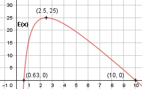

Aufgabe 84 Die Steigerung E der Aktivität von Zellen, die Tumore angreifen, hängt von der Dosis x eines Präparates in μl/kg des Körpergewichts der Patienten ab. Die Steigerung lässt sich durch E(x) = (5/9)(85 - 8x - 50/x) beschreiben. a) Bei welcher Dosis ist die Wirkung am größten? b) Welche Dosis ist für einen Patienten von 85 kg optimal? c) Gibt es eine Dosis, die zu keiner Steigerung führt? a) 5 50 E'(x) = ---(-8 + ----) 9 x2 5 100 E''(x) = --- * (- -----) immer < 0 für x > 0 9 x3 5 50 ---(- 8 + ----) = 0 | *9 9 x2 250 -40 + ------ = 0 | *x2 x2 -40x2 + 250 = 0 | +40x2 40x2 = 250 | :40 x2 = 6,25 x1,2 = ± 2,5 x1 = 2,5, E(2,5) = (5/9)(85 - 8 * 2,5 - 50/2,5) = 25 x2 = - 2,5 keine Lösung Bei einer Dosis von 2,5 μl/kg ist die Wirkung am größten. b) Optimale Dosis in μl für 85 kg: 2,5 μl/kg * 85 kg = 212,5 μl c) Es ergibt sich keine Steigerung mehr, wenn E(x) = 0. 5 50 9 --- (85 - 8x - ----) = 0 |*--- 9 x 5 50 85 - 8x - ---- = 0 |*x x -8x2 + 85x - 50 = 0 A, B, C - Formel: A = -8, B = 85, C = -50 x1,2 = x1,2 = x1,2 = -85 ± 75 x1,2 = ------------ -16 x1 = 10 x2 = 0,63 Ist die Dosis > 10 oder < 0,63, dann ist keine Steigerung mehr.
